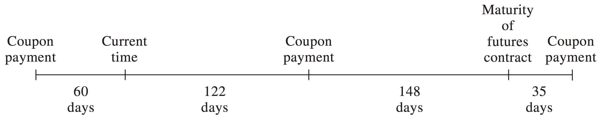
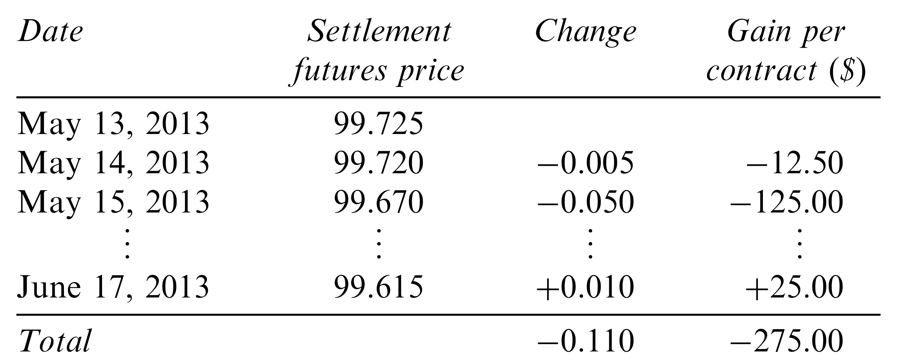

Common Interest Rates
- Treasury rates.
- U.S. Treasury rates are rates earned by on bills, notes and bonds.
- London Interbank Offer Rate (LIBOR).
- Short-term borrowing rate between banks.
- Published by British Bankers Association (BBA) on 10 currencies and 15 borrowing periods. Based on survey of AA-rated banks.
- Fed Funds Rate.
- The overnight lending rate between banks which keep deposits at the Federal Reserve.
Day Counts
Different day count conventions exist for determining the period over which interest bearing instruments accrue interest.
- Actual/Actual (U.S. Treasury bonds and notes).
- 30/360 (Corporate agency, municipal bonds).
- Actual/360 (T-bills, commercial paper).
T-bill Quotations
T-bill prices are quoted using a discount rate.
- The discount rate is the annualized interest earned as a percentage of final face value.
The cash price of a T-bill is defined as
\[\begin{align}
P & = 100 - \frac{n}{360} Q.
\end{align}\]
- \(\smash{Q}\) is the quoted price of the bond (the discount rate).
- \(\smash{n}\) is the number of days remaining in the life of the bond.
Treasury Bond Quotations
Treasury bonds are quoted in dollars and thirty-seconds of a dollar.
- For example, on Mar 5, 2015, the 30-year semi-annual Treasury bond with 11% coupon rate maturing July 10, 2038 was quoted as 95-16, or $95.50.
- The quotations do not include accrued interest.
- Accrued interest is the prorated amount of the next coupon that must be paid to the seller, since they will not receive the coupon at a later date.
- The quoted price is the clean price.
- The dirty price includes accrued interest.
Accrued Interest
Treasury bond coupon rates are always quoted in annual terms.
- An 8% coupon on a semiannual bond means that a 4 dollar coupon is paid every 6 months (assuming $100 face value).
- In the example above, the 11% coupon rate means $5.50 is paid every 6 months, on Jan 10 and Jul 10.
- If you buy the bond on Mar 5:
- 54 days have elapsed since Jan 10
- There are a total of 181 days between Jan 10 and Jul 10.
- Accrued interest is \(\smash{\frac{54}{181}\$5.50 = \$1.64}\).
The dirty price of the bond is: \(\smash{\$95.50 + \$1.64 = \$97.14}\).
Treasury Futures
Treasury futures typically provide a menu of instruments that can be delivered.
- Treasury bond futures: any bond with 15 to 25 years to maturity.
- Ultra T-bond futures: any bond with maturity over 25 years.
- 10-year Treasury note futures: any bond/note with 6.5 to 10 years to maturity.
- 5/2-year Treasury note futures: a note with about 5/2 years remaining and original maturity less than 5.25 years.
- Conversion factors compensate recipient for differentials in delivered instruments.
Conversion Factors
The party with the short futures position chooses the instrument to deliver.
The cash price paid by the recipient (long position) is
\[\begin{align} \text{Most recent settlement price} \times \text{Conversion factor} + \text{Accrued interest}. \end{align}\]
- The short party determines the cheapest-to-deliver bond using data on conversion factors and settlement prices.
Treasury Futures Quotations
Each futures is for delivery of $100,000 face value of bonds.
- Treasury bond and Ultra T-bond futures: quoted in thirty-seconds of
a dollar per $100 face.
- Identical to spot market.
- 10-year Treasury note futures: quoted in half of a thirty-second.
- 5/2-year Treasury note futures: quoted in quarter of a thirty-second.
Treasury Futures Quotations

Treasury Futures Price
The value of a Treasury futures is somewhat ambiguous because the cheapest-to-deliver bond and delivery date aren’t precise.
Assuming a date and a particular bond, the price is:
\[\begin{align} F_0 & = (S_0 - I) e^{rT} \end{align}\]
- \(\smash{I}\) is the present value of coupons for the remainder of the bond’s life.
- \(\smash{r}\) is the risk-free interest rate.
- \(\smash{T}\) is the life of the bond in years.
Treasury Futures Price Example
Suppose the following characteristics of cheapest-to-deliver bond:
- Quoted bond price is $115.
- 12% coupon rate and bond is semi-annual.
- 270 days until maturity.
- Conversion factor of 1.6000.
- Risk-free rate is 10% per annum.
- 60 since last coupon.
- 122 days until next coupon.
- Futures contract expires 35 days before bond maturity.
Treasury Futures Price Example
Treasury Futures Price Example
Cash price of bond includes accrued interest:
\[115 + \frac{60}{60+122} \times 6 = 116.978.\]
Present value of $6 coupon received in 122 days (0.3342 years):
\[\smash{6e^{-0.1 \times 0.3342} = 5.803.}\]
Life of futures contract is 270 days (0.7397 years), so the cash price is:
\[\smash{F_0 = (116.978 - 5.803) e^{0.1 \times 0.7397} = 119.711.}\]
Treasury Futures Price Example
At expiry, there are 148 days of accrued interest, so quoted price is:
\[\begin{split}\begin{align}
119.771 - 6 & \times \frac{148}{148+35} = 114.859 \\
\Rightarrow \frac{114.859}{1.6000} & = 71.79.
\end{align}\end{split}\]
Eurodollar Futures
- A Eurodollar is a dollar deposited in a bank outside of the U.S.
- 3-month Eurodollar futures are most popular interest rate futures
traded at CME Group.
- They are futures contracts on 3-month LIBOR to be paid on $1m principle at the expiry date.
- Eurodollar futures have maturities in the four nearest months and then Mar/Jun/Sep/Dec for up to 10 years.
Eurodollar Futures Quotes
A Eurodollar futures quote is 100 minus the futures interest rate:
\[\begin{align}
Q & = 100 - R.
\end{align}\]
- The rate is an APR and is expressed in precent.
Since the contract is for 3 months (0.25 years), the contract price is defined as:
\[\begin{align}
P & = 10,000 \times (100 - 0.25 R) = 10,000 \times (100 - 0.25
(100 - Q)).
\end{align}\]
- The contract price is the difference between the principle ($1m) and the interest paid on the principle.
- A 0.01% change in the futures rate or futures quote causes a $25 change in paid interest or contract price.
Eurodollar Futures Table
Eurodollar Futures Example
In the previous table:
The June 2013 futures price on May 13, 2013 is
\[\begin{align} 10,000 \times (100 - 0.25(100-97.725)) & = \$999,312.5. \end{align}\]
The June 2013 futures price on Jun 17, 2013 (expiry) is
\[\begin{align} 10,000 \times (100 - 0.25(100-97.615)) & = \$999,037.5. \end{align}\]
- The price fell by 11 basis points or \(\smash{\$25*11 = \$275}\).
- The buyer benefits if rate (price) falls (rises).
Hedging with Eurodollar Futures
Suppose it is currently April 27 and you plan to lend $1 million for 3 months on May 24 at the 3-month LIBOR rate.
- You can hedge yourself by purchasing a Eurodollar futures contract with May 15 expiry.
- If the current quoted price of the contract is \(\smash{Q_0 = 98.80}\), the implied LIBOR rate is \(\smash{1.2\%}\) per year or \(\smash{1.2/4 = 0.3\% = 0.003}\) for the 3-month period May 14 - Aug 14.
- The cash price is \(\smash{P_0 = \$10,000(100-0.25*(100-Q)) = \$997,000}\).
Hedging with Eurodollar Futures
- If the price rises to \(\smash{P_1 = \$998,000}\) on May 14 when you close out the contract, you gain $1000 on the futures.
However, the implied 3-month LIBOR will be the value \(\smash{R_1}\) such that
\[\smash{\$998,000 = \$10,000*(100-0.25 R_1)}\]or \(\smash{0.8\% = 0.008}\) per year or \(\smash{0.8/4 = 0.2\% = 0.002}\) for the 3-month period May 14 - Aug 14.
- As a lender, you lose \(\smash{\$1,000,000 (0.003-0.002) = \$1,000}\), which balances the gain on the futures.